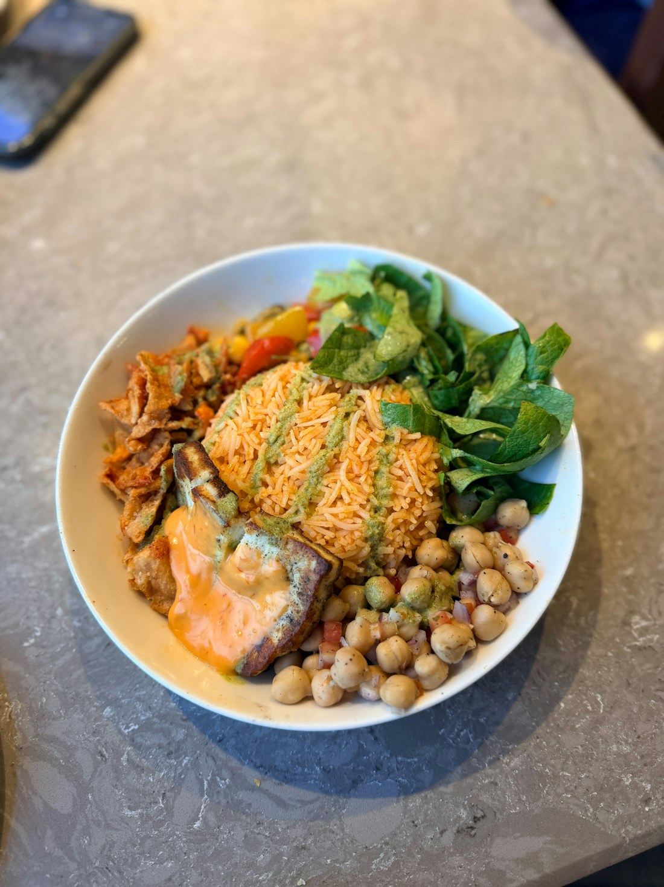
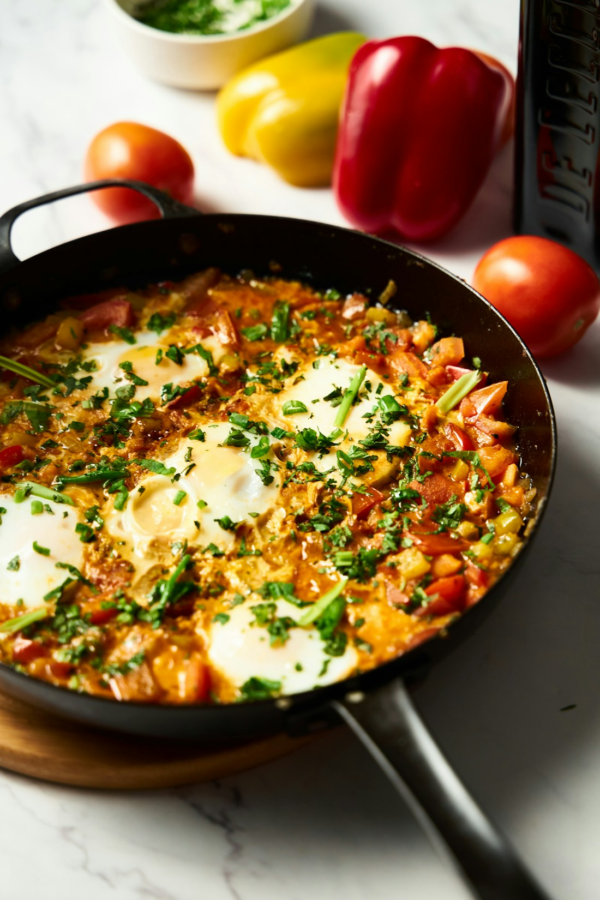

A little inspiration for tonight
Good food.
No fuss.
Comforting recipes with familiar ingredients, clear steps, and room to make them your own.
Find your next favorite
The recipe box
Three good places to start
Choose a recipe to see the ingredients and step-by-step method.

35 minutes · easy
Crispy chickpea bowls
Golden spiced chickpeas meet crunchy vegetables and creamy tahini.

A useful kitchen note
Dinner should feel doable.
Every recipe is written for a home kitchen. Read the whole method first, prepare the ingredients, and adjust salt, heat, and acidity to suit your table.
At a glance
Choose by your evening
| Recipe | Total time | Serves | Good with |
|---|---|---|---|
| Lemon herb pasta | 20 min | 2–3 | Green salad |
| Crispy chickpea bowls | 35 min | 2 | Warm flatbread |
| Skillet shakshuka | 40 min | 3–4 | Crusty bread |
A tiny kitchen extra
A little timer chime
A short, original two-note cue you can play while getting ready to cook. It is optional; the recipe steps do not depend on sound.
Audio description: two soft, rising chime notes followed by a brief pause.
Help us make it better
How did it go?
This sample form works locally and does not send your answers to a server.